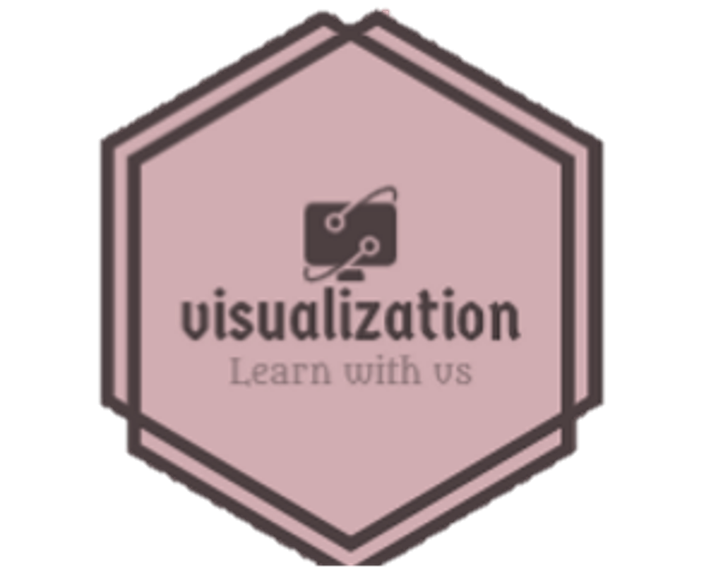

Visualizing Design Patterns: A Student-Centric Learning App
About Software Design Patterns Visualization
Welcome to the Software Design Patterns Visualization application! Our mission is to make learning software design patterns engaging and interactive.
Software design patterns are fundamental concepts in software engineering. They provide solutions to recurring design problems, making code more maintainable and efficient.
Our application offers visualizations of various design patterns, helping students and developers understand these patterns through interactive examples and quizzes.
Interactive Visualizations
Explore design patterns through interactive diagrams and animations that make complex concepts easier to grasp.

Learn at Your Pace
Whether you're a beginner or an experienced developer, our application caters to your learning needs with quizzes and exercises.
Engage with the Community
Join our community to discuss design patterns, share insights, and collaborate with fellow learners from around the world.
What are Software Design Patterns?
Software design patterns are reusable solutions to common problems that developers encounter while designing and implementing software systems. They are general solutions or templates that help developers create well-structured, maintainable, and efficient code by providing proven approaches to solving specific design challenges. These patterns are not specific to a particular programming language or technology but can be applied across various contexts.
Design patterns were popularized by the "Gang of Four" (Erich Gamma, Richard Helm, Ralph Johnson, and John Vlissides) in their book "Design Patterns: Elements of Reusable Object-Oriented Software," published in 1994. This book introduced 23 foundational design patterns that have since become widely recognized and used in software development.
There are three main categories of design patterns:
Click on each pattern to learn more.
Creational Design Patterns: These patterns focus on the process of object creation. They provide ways to instantiate objects while hiding the complexity of instantiation, class creation, or composition. Examples include:
Structural Design Patterns: These patterns deal with the composition of classes or objects to form larger structures while keeping these structures flexible and efficient. Examples include:
Behavioral Design Patterns: These patterns address communication and interaction between objects, focusing on how objects collaborate and fulfill their responsibilities. Examples include:
Exercise 1:Implement a Singleton class in Java that manages a configuration settings object. Ensure that only one instance of the configuration is created.
Factory Method Pattern
Exercise 2: Design a factory method in Java for creating different types of pizza objects (cheese, pepperoni, veggie).
Abstract Factory Pattern
Exercise 3: Create an abstract factory in Java for producing UI elements (buttons, text fields) for both desktop and mobile applications.
Builder Pattern
Exercise 4: Implement a builder class in Java for constructing a complex meal (appetizer, main course, dessert) in a restaurant.
Prototype Pattern
Exercise 5:Design a prototype mechanism in Java to clone and modify existing graphic elements (circles, squares).
Adapter Pattern
Exercise 6:Develop an adapter class in Java to connect a legacy payment system to a new payment interface.
Bridge Pattern
Exercise 7:Create a bridge in Java between different drawing tools (pen, pencil) and shapes (circle, square).
Composite Pattern
Exercise 8:Implement a composite structure in Java to represent a company hierarchy with employees as leaf nodes and departments as composites.
Decorator Pattern
Exercise 9:Design a decorator system in Java to add toppings (cheese, vegetables) to pizza objects.
Facade Pattern
Exercise 10:Create a facade in Java to simplify interactions with a complex library (file compression, encryption).
Proxy Pattern
Exercise 11:Develop a virtual proxy in Java to load and display high-resolution images only when they are needed.
Chain of Responsibility Pattern
Exercise 12:Implement a chain of email processors in Java to handle tasks like spam filtering, virus scanning, and message formatting.
Observer Pattern
Exercise 13:Design a weather station simulation in Java using the Observer Pattern. Implement weather data as the subject and displays as observers.
Strategy Pattern
Exercise 14:Develop a payment system in Java using the Strategy Pattern. Create payment methods (credit card, PayPal) as strategies, and allow clients to select a payment method.
Quizzes
Quiz 1: What problem does the Singleton Pattern solve?
Quiz 2: What's the main purpose of the Factory Method Pattern?
Quiz 3: The Abstract Factory Pattern is used for:
Quiz 4: The Builder Pattern is used to:
Quiz 5: What's the main advantage of the Prototype Pattern?
Quiz 6: The Adapter Pattern is used to:
Quiz 7: What's the primary goal of the Bridge Pattern?
Quiz 8: In the Composite Pattern, what is a leaf?
Quiz 9: The Decorator Pattern is used to:
Quiz 10: The Facade Pattern is used to:
Quiz 11: In the Proxy Pattern, what does the proxy control access to?
Quiz 12: The Chain of Responsibility Pattern is used for:
Quiz 13: What's the primary purpose of the Observer Pattern?
Quiz 14: The Strategy Pattern is used to:
Feedback
We highly value your feedback and suggestions as they help us improve our services and make your experience even better. Please take a moment to share your thoughts with us by filling out the feedback form below. Your input is invaluable to us.
Your feedback is anonymous unless you choose to provide your contact information. We respect your privacy and will use your feedback solely to enhance our services.
Thank you for taking the time to help us improve. Your feedback is greatly appreciated!
Contact Us
Feel free to get in touch with us. We're here to help and answer any questions you might have. You can reach out to us through multiple channels:
Email
For general inquiries, feedback, or support, you can contact us via email at gul.rani.2021@uni.strath.ac.uk. We aim to respond within 24 hours.
Social Media
Connect with us on social media to stay updated on the latest news, events, and content:
Whether you have questions about our services, want to collaborate, or simply want to say hello, we look forward to hearing from you. Your feedback and engagement mean a lot to us, and we're committed to providing you with the best experience possible.